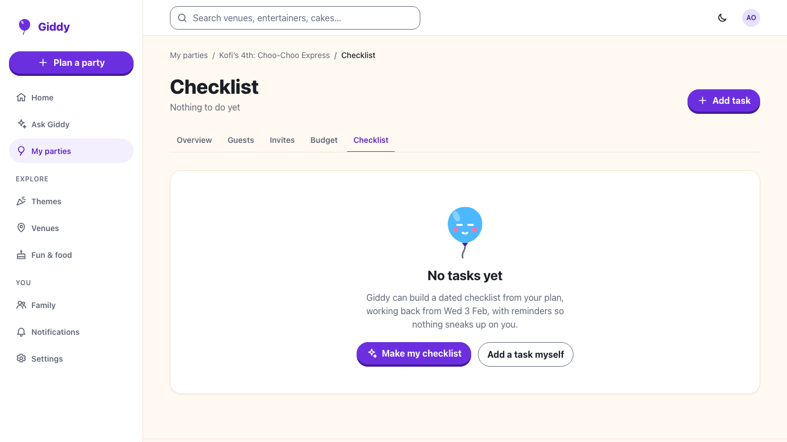
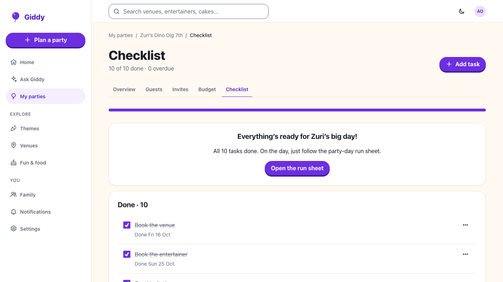

Giddy · Video 11
Follow the checklist
Dated tasks, shared work, and reminders that respect quiet hours
Dated tasks, shared work, and reminders that respect quiet hours
Overdue in words; reminders sent after confirming; a task for Kemi in date order.
Kemi's tick arrives as a toast and the task moves to Done; nobody is told about their own tick.


backend/src/Giddy.Domain/Notifications/QuietHours.cs
Dates and groups, ticking and live updates, task rules, making a checklist, Giddy's allergy list, viewers, reminders, digest, quiet hours.
Groups, ticking, co-planners, menu order, adding, editing, deleting, Giddy's tasks, empty and all-done, axe at 360 and 1280 px.
Next: the party day